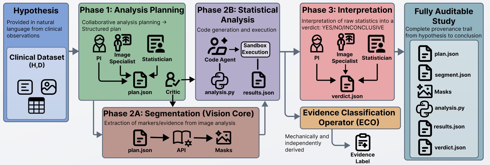
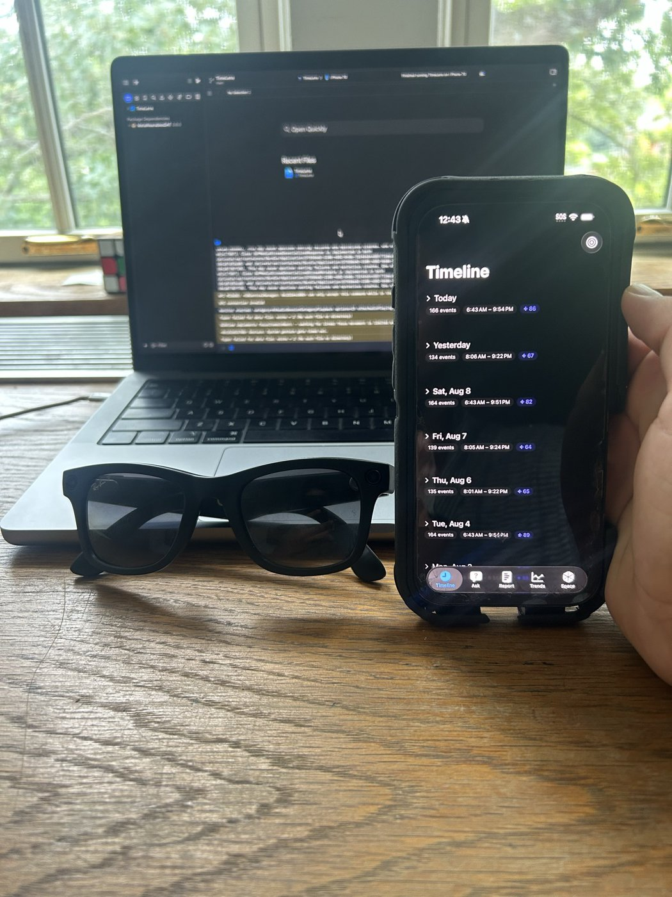
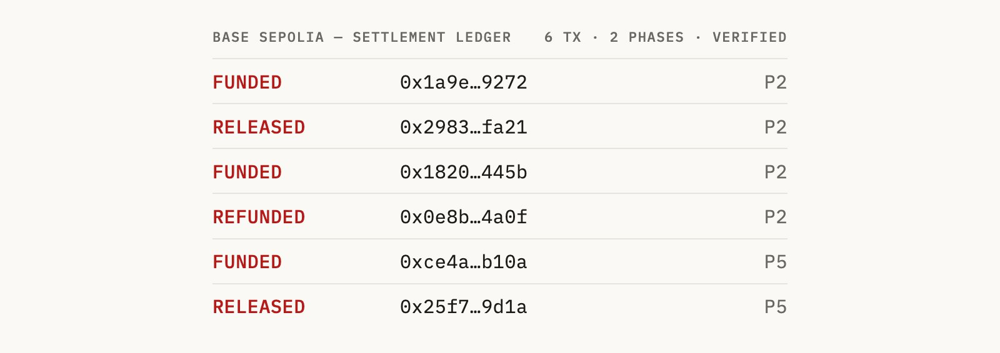
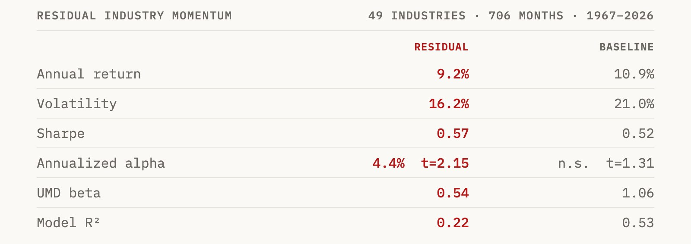

01 — About
I'm studying Computer Science and Electrical & Computer Engineering at Cornell University's College of Engineering.
BS Computer Science & Electrical and Computer Engineering
Expected May 2028 • GPA: 3.90/4.00
02 — Experience
Apr 2026 – Present
Jan 2026 – Present
Oct 2025 – May 2026
Sept 2025 – Present
Sept 2025 – Aug 2026
June 2022 – Aug 2025
03 — Projects

A research internship at the Paetzold Lab, Weill Cornell Medicine / Cornell Tech: a pre-registered 52-hypothesis program testing whether brain imaging predicts stroke recovery beyond clinical variables, then a 50-run evaluation of the lab's published agentic LLM analysis pipeline. The evaluation's headline: runs that computed the right statistic got the right label only 21.4% of the time — and upgrading the model made labels worse — a study of evaluation design, not a replication.
Cornell AppDev's campus marketplace app for student buyers and sellers, live on the App Store and Google Play with 150 monthly users. The Android client is built in Kotlin and Jetpack Compose by a student team; I developed on the Android side, where I built the availability-scheduling flow — the calendar picker and availability sheet buyers and sellers use to coordinate meetups.

An iOS app that turns POV frames from Meta Ray-Ban Gen 2 glasses into a searchable timeline of your day. Frames go to Gemini, come back as structured events, and the image is deleted immediately — no picture ever persists. A coaching layer scores deep work, distraction rate, and context switches, with events pinned to real furniture in a LiDAR room scan.

The trust layer AI agents need to transact — identity, wallets, reputation — plus two working economies running on it, settling real crypto on-chain. Three MIT-licensed repos — AgentCred, AgentMarket, and AgentExchange — with 231 tests and six Base Sepolia transactions, each independently verifiable on Basescan.

Quantitative research at Paragon Global Investments: residual-momentum alpha across 49 industry portfolios, built with rolling Fama-French time-series regressions in Python. Market, size, and value exposures are neutralized, and return persistence is backtested.
04 — Skills
05 — Contact
I'm currently looking for internship opportunities. Feel free to reach out!